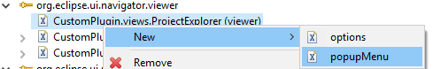
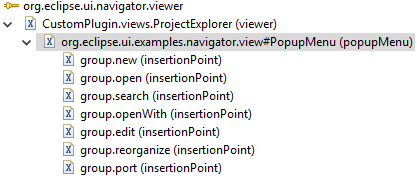
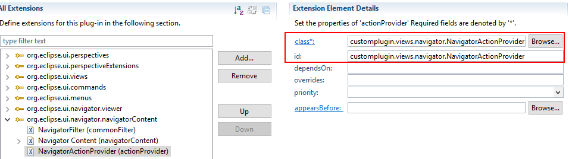
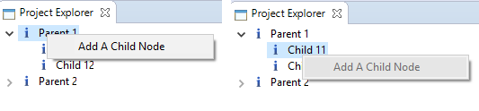
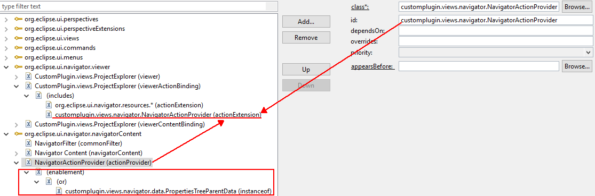
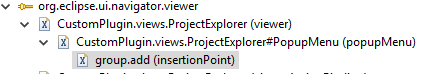
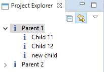

In this section, we will introduce two methods about how to add menu to a common navigator.
The First Method: Add menus defined eclipse to common navigator
1-1. Add a popupMenu to the navigator viewer.
1-2.Set the popupMenuID to org.eclipse.ui.examples.navigator.view.menu which is the menu of eclipse and add insertionPoints. The example is shown as below.
1-3. The above operations will add menus defined eclipse, like "New", "Open", and so on, to common navigator.
The Second Method: Add custom menus defined by developers to common navigator through org.eclipse.ui.popupMenus and org.eclipse.ui.navigator.navigatorContent/actionProvider
The implementation is based on previous example.
We will add custom "Add A Node" menu to common navigator in the following example. The action will add a child node of the PropertiesTreeParentData.
2-1.Create add action class: AddNodeAction which extends org.eclipse.jface.action.Action. The function is to add a children node to the PropertiesTreeParentNode.
import org.eclipse.jface.action.Action;
import org.eclipse.jface.viewers.ISelection;
import org.eclipse.jface.viewers.ISelectionProvider;
import org.eclipse.jface.viewers.IStructuredSelection;
import org.eclipse.ui.IWorkbenchPage;
import customplugin.views.ProjectExplorer;
import customplugin.views.navigator.data.PropertiesTreeData;
import customplugin.views.navigator.data.PropertiesTreeParentData;
public class AddNodeAction extends Action {
private IWorkbenchPage page;
private PropertiesTreeParentData data;
private ISelectionProvider selectionProvider;
public AddNodeAction(IWorkbenchPage p, ISelectionProvider selectionProvider) {
setText("Add A Child Node"); //name of action
this.page = p;
this.selectionProvider = selectionProvider;
}
public boolean isEnabled() {
ISelection selection = selectionProvider.getSelection();
if(!selection.isEmpty()){
IStructuredSelection sSelection = (IStructuredSelection) selection;
if(sSelection.getFirstElement() instanceof PropertiesTreeParentData){
data = (PropertiesTreeParentData) sSelection.getFirstElement();
return true;
}
}
return false;
}
public void run() {
PropertiesTreeData childNode = new PropertiesTreeData("new child", null, data.getProject());
data.addChild(childNode);
//refresh the navigator
ProjectExplorer navigator = (ProjectExplorer) page.findView(ProjectExplorer.ID);
navigator.getCommonViewer().refresh(data);
}
}
2-2. Add actionProvider to org.eclipse.ui.navigator.navigatorContent extension. And create the class customplugin.views.navigator.NavigatorActionProvider.
2-3. The codein navigator action provider. Create ID for action like ACTION_ADD = "group.add". This id will be used in the popup menu. Eclipse can use it find the exact action.
In the init method, create the add action object and add it to the action list and action Group.
The fillContextMenu method is called every time when you right click the navigator. It is used to show(disable or enable) the actions in the menu. Thus, we use isEnable method in action to disable/enable the action. For instance, if the element selected is PropertiesTreeData, the isEnable of add action will return false. Then the setEnable method will disable it in the menu.
However, the disable action will also be added to the menu by menu.appendToGroup().
import org.eclipse.jface.action.Action;
import org.eclipse.jface.action.IMenuManager;
import org.eclipse.ui.navigator.CommonActionProvider;
import org.eclipse.ui.navigator.ICommonActionExtensionSite;
import org.eclipse.ui.navigator.ICommonViewerSite;
import org.eclipse.ui.navigator.ICommonViewerWorkbenchSite;
import customplugin.views.navigator.actions.AddNodeAction;
public class NavigatorActionProvider extends CommonActionProvider {
public final static String ACTION_ADD = "group.add";
private List actionList;
private Map actionGroup;
public NavigatorActionProvider() {
// TODO Auto-generated constructor stub
}
public void init(ICommonActionExtensionSite aSite) {
ICommonViewerSite viewSite = aSite.getViewSite();
if (viewSite instanceof ICommonViewerWorkbenchSite) {
ICommonViewerWorkbenchSite workbenchSite = (ICommonViewerWorkbenchSite) viewSite;
actionList = new ArrayList();
actionGroup = new HashMap();
Action addNodeAction = new AddNodeAction(workbenchSite.getPage(),
workbenchSite.getSelectionProvider());
actionList.add(addNodeAction);
actionGroup.put(addNodeAction, ACTION_ADD);
}
}
public void fillContextMenu(IMenuManager menu) {
for (Action act : actionList) {
act.setEnabled(act.isEnabled());
menu.appendToGroup(actionGroup.get(act), act);
}
}
}
2-4. Add customplugin.views.navigator.data.PropertiesTreeParentData instance to the action provider as shown in the figure below. It means that actions created in this action provider will show only when the selected object is a PropertiesTreeParentData object. If you want it to show on the PropertiesTreeData you need to add PropertiesTreeData instead of ProperjtiesTreeParentData. Note: The PropertiesTreeParentData is also a kind of PropertiesTreeData. So both of these two objects will show the actions in the action provider.
Then add the action provider to the viewer action binding node as an action extension of the common navigator.
2-5. The last step is same with the first method. Add popup menu to the navigator viewer. And add insertion point to the menu. The name of the insertion point is "group.add" which is same with the definition in the aciton provider.
2-6. The result of Add action
Tips:
Based on the implementation of the second method, it is easy to add more custom actions in the menu.
First, extend the org.eclipse.jface.action.Action to create the custom actions.
Second, initialize the action in the init method of action provider. Remember to add ID to the action. Generally, the format is "group.action name".
At last, add an insertion point in the popup menu of your navigator viewer. The name of insertion point is same with your action id defined in the action provider(group.action name).